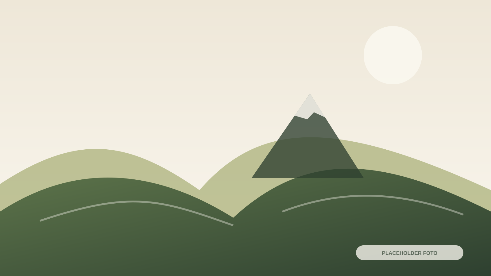

Homestay
Nama Homestay 01
Lokasi, kapasitas, fasilitas, kisaran harga, dan kontak WhatsApp.
Direktori homestay, Jeep, ojek, pemandu, porter, rental alat, dokumentasi, oleh-oleh, dan fasilitas umum.
Data nama, foto, lokasi, kapasitas, fasilitas, kisaran harga, dan kontak belum tersedia.
Lokasi, kapasitas, fasilitas, kisaran harga, dan kontak WhatsApp.


Pilihan singgah untuk kebutuhan sebelum atau setelah pendakian.
Rute, kapasitas kendaraan, titik penjemputan, kisaran harga, dan kontak koordinator perlu dilengkapi.

Jenis layanan, kapasitas, rute, titik jemput, harga, dan kontak koordinator.
DATA BELUM TERSEDIATitik layanan, area jangkauan, ketentuan, dan kontak resmi.
DATA BELUM TERSEDIAGunakan layanan resmi dan pastikan cakupan layanan sebelum melakukan pemesanan.
Cakupan layanan, ketentuan pemesanan, kisaran harga, dan kontak koordinator.
Jenis muatan, batas layanan, ketentuan, kisaran harga, dan kontak.
Nomor koordinator belum diisi dan harus dikonfirmasi lebih dahulu.
Seluruh tombol kontak diarahkan ke direktori pusat sampai nomor resmi diisi pada config.js.
Daftar alat, harga, syarat sewa, dan kontak penyedia belum diisi.
Foto, video, paket pendakian, dan paket kelompok.
Lihat DetailProduk lokal, makanan, kerajinan, pertanian, lokasi, dan kontak.
Lihat DetailParkir, toilet, musala, warung, kesehatan, ATM, dan keamanan.
| Fasilitas | Lokasi | Jam/Ketersediaan | Catatan |
|---|---|---|---|
| Parkir | BELUM DIISI | BELUM DIISI | Perlu verifikasi pengelola |
| Toilet | BELUM DIISI | BELUM DIISI | Perlu verifikasi pengelola |
| Musala | BELUM DIISI | BELUM DIISI | Perlu verifikasi pengelola |
| Warung | BELUM DIISI | BELUM DIISI | Perlu verifikasi pengelola |
| Pusat kesehatan | BELUM DIISI | BELUM DIISI | Perlu verifikasi pengelola |
| ATM terdekat | BELUM DIISI | BELUM DIISI | Perlu verifikasi pengelola |
| Tempat istirahat | BELUM DIISI | BELUM DIISI | Perlu verifikasi pengelola |
| Pos keamanan | BELUM DIISI | BELUM DIISI | Perlu verifikasi pengelola |
Hubungi pusat informasi untuk diarahkan kepada penyedia lokal atau koordinator layanan yang tepat.